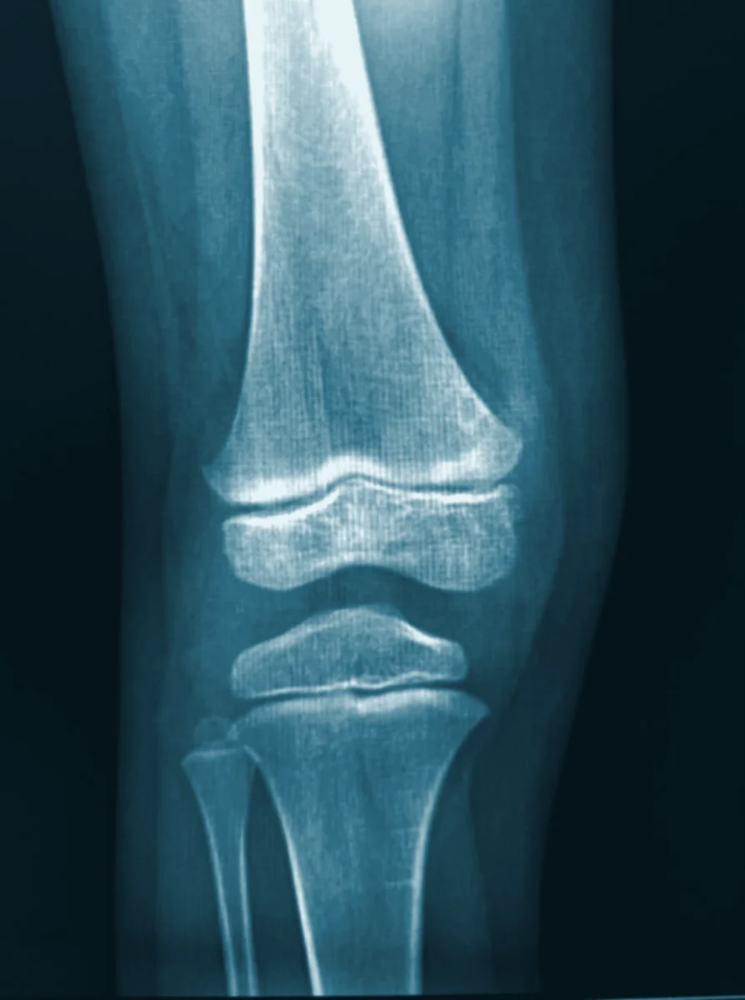
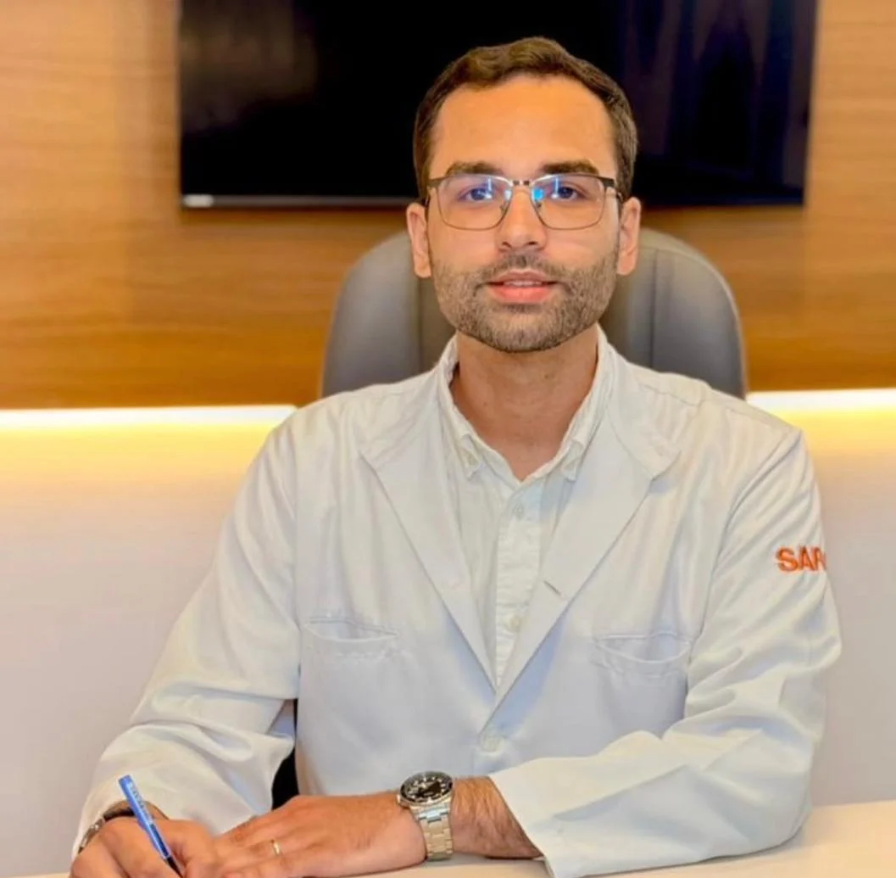
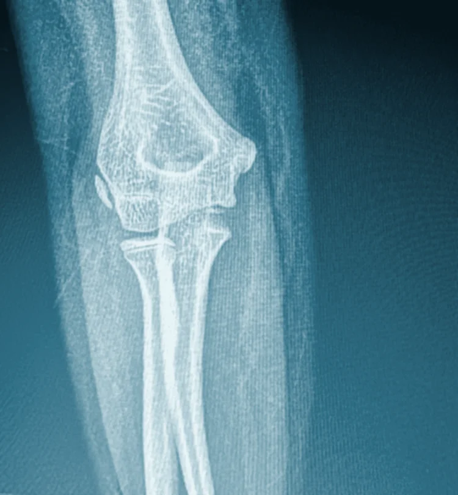
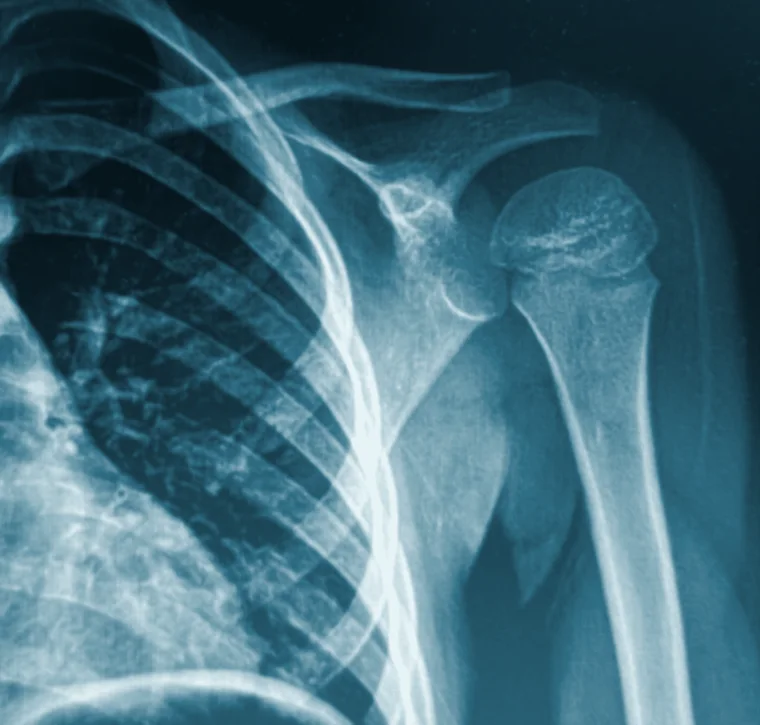
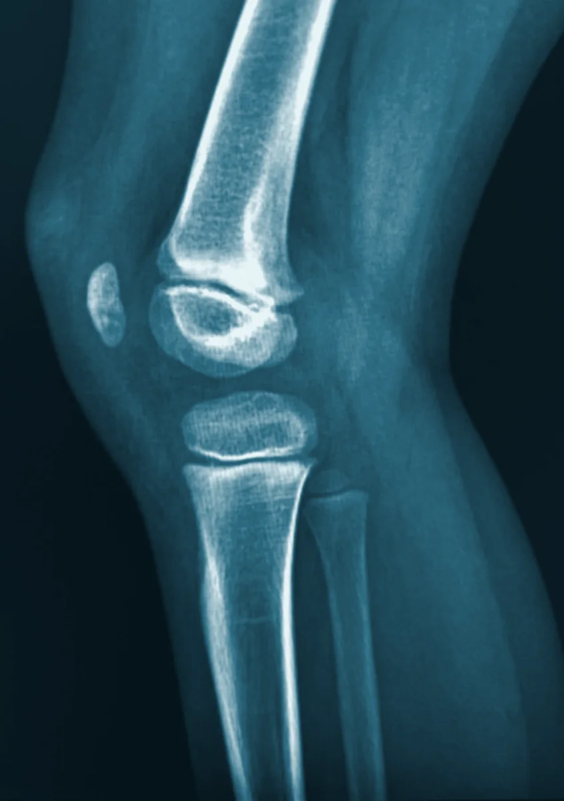

Joelho e placa de crescimento
Dores no joelho, lesões e alterações da fise — a região onde o osso da criança cresce.
Ortopedia pediátrica com escuta, precisão e acolhimento. Do primeiro passo ao esporte na adolescência, acompanhamos o desenvolvimento dos ossos e articulações do seu filho.
O Dr. Arthur Cartonilho Dal Cortivo é médico ortopedista e traumatologista com atuação em ortopedia pediátrica — a área que cuida do sistema musculoesquelético de bebês, crianças e adolescentes.
Na criança, o osso cresce, se remodela e responde de forma diferente do adulto. Por isso, cada diagnóstico considera a fase de desenvolvimento, e cada plano de tratamento é construído junto com a família.

Avaliação, diagnóstico e tratamento das principais condições ortopédicas da infância — e do trauma em todas as idades.

Dores no joelho, lesões e alterações da fise — a região onde o osso da criança cresce.
Rastreamento e tratamento desde os primeiros meses de vida. Quanto mais cedo o diagnóstico, mais simples o tratamento.
Detecção, acompanhamento e indicação de colete ou cirurgia quando necessário.
Método de Ponseti para o pé torto congênito e acompanhamento do arco plantar.
Pés para dentro, joelhos em X ou arqueados: o que é fase e o que é tratamento.

Cotovelo, punho e antebraço estão entre as lesões mais frequentes da infância — com atenção à placa de crescimento.

Clavícula, ombro e úmero: diagnóstico e tratamento do trauma e das dores no braço.
Dores de crescimento, lesões por sobrecarga e orientação para a prática esportiva segura.

Entorses, quedas e fraturas em crianças, adolescentes e adultos.
Mancar ou andar diferente sem causa aparente.
Dor que acorda à noite ou que não melhora com repouso.
Ombros ou quadris desalinhados, ou um lado das costas mais alto.
Pernas de tamanhos diferentes ou dobras assimétricas no bebê.
Pés muito para dentro ou para fora após os primeiros anos.
Quedas e torções com inchaço ou dificuldade de apoiar.
Uma consulta pensada para a criança se sentir à vontade e para a família sair com todas as respostas.
Conversamos sobre a história, o desenvolvimento e as preocupações da família.
Avaliação clínica cuidadosa e, quando necessário, exames de imagem.
Explicação clara do diagnóstico e um plano de tratamento construído em conjunto.
Agende uma avaliação pelo WhatsApp. Atendimento no Day Hospital, em Manaus, de segunda a sexta, das 7h às 16h.
Agendar pelo WhatsApp